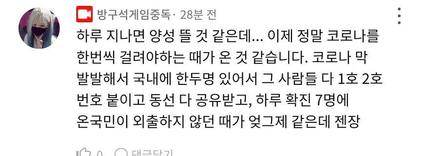
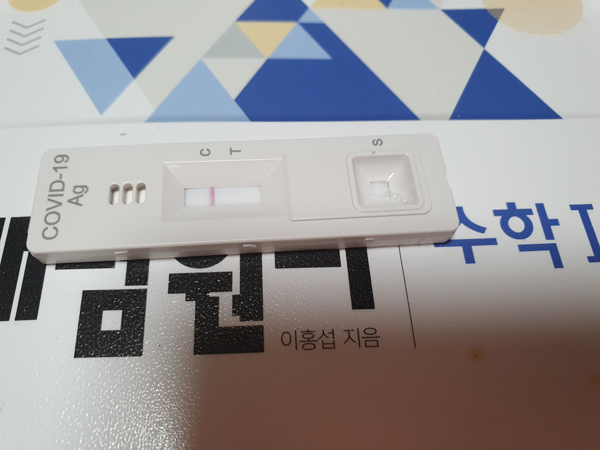

이 말 듣고 갑자기 몸이 아파진 것 같아서 자가진단 또 했습니다.

수학1과 음성 키트... 근데 두통이 있고 기침이 계속 납니다. 내일 신속항원검사 또 받아봐야겠어요
코로나 미감염자 붐은 온다.....
코로나 걸리기 싫은데 어떡하죠
PCR 검사 받아보시는건 어떻습니까? 시간은 오래걸려도 더 정확하다고 들은 거 같습니다
요즘 신속항원검사받고 양성이어야 pcr받을 수 있다던데 사실입니까?ㅜㅜ 하... 진짜 아싸가 정답이었습니다. 괜히 얘기했다...
저는 밀접접촉자였어서 바로 PCR 검사 받았던걸로 기억하는데 밀접접촉자로 분류되셨으면 항원검사 없이도 가능할 거 같습니다
몸상태봐서 받아봐야겠습니다.. 시청, 집, 시청, 집만 왔다갔다하는데 어째서....
밀접접촉자 되셨습니까? 연락되어야 pcr 가능합니다
요즘도 밀접접촉자 조사합니까? 저 그런것도 없습니다...
방장! 왜 불쌍한 학습자 불안하게 만드냐고!
고소준비중입니다.
꺄
2일 뒤에는 확진 뜸
2일뒤까지 또 불안하게 생겼네요. 정말 감사합니다 방교수님 역시 방교수님이 최고에요!

후원댓글 13개
댓글 13개 ▼